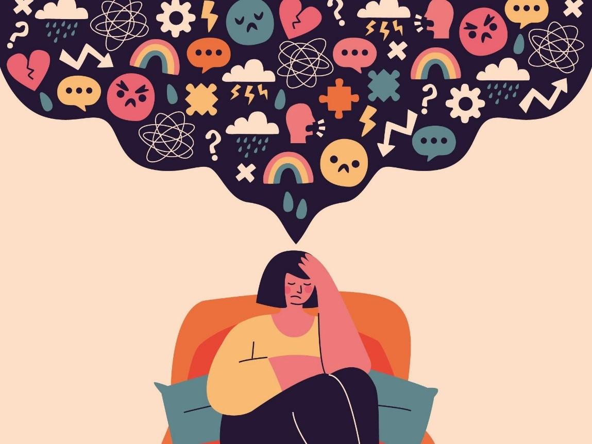

Saúde Mental
A importância da saúde mental
Escrito por Mariana Florence

A saúde mental é a forma como um indivíduo se sente cognitivamente diante pensamentos, desafios, emoções, sentimentos, experiências, um completo estado de bem-estar físico, mental e social. Como lidamos com isso é o que determina como está a qualidade da nossa saúde mental. A saúde mental é tão importante quanto a saúde física, ambas são vertentes fundamentais para uma qualidade de vida melhor.
Alguns hábitos podem melhorar e outros prejudicar a sua saúde, problemas como a ansiedade, estresse e depressão tendem a ser os piores inimigos nesse quesito. Vale a pena lembrar que a maioria das pessoas sofrem com estas questões, porém o preconceito ainda é presente na sociedade e justamente pelo preconceito e julgamento, as pessoas não querem procurar ajuda profissional para os seus transtornos mentais por receio de serem vistas como fracas, malucas ou descontroladas.
Mas há algumas formas de melhorar isso, frequentar psicólogos, deixar de lado o pessimismo, auto depreciação e respeitar os nossos limites melhoram esses fatores. Todo mundo acha que precisa ser bom o tempo inteiro, incessantemente, até mentir para nós mesmo que está tudo ótimo, porém às vezes é preciso descansar, parar com a auto cobrança e nos permitir sentir as coisas. Muitos veem o derramar de lágrimas como fraqueza, mas chorar é como uma válvula de escape, não precisamos segurar isso como se fosse algo vergonhoso. Às vezes é bom colocar para fora, desabafar com alguém de confiança também costuma tirar um pouco desse peso que sentimos. Combater o preconceito é sempre falar sobre o assunto, propor debates e buscar entender que cada um tem sua maneira de funcionar, mesmo que seja bem diferente da sua.